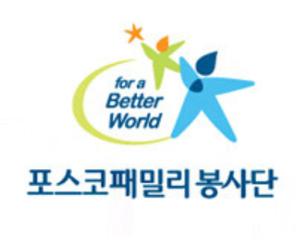

사회공헌
포스코엠텍 봉사단
로고소개

포스코패밀리 봉사단의 Visual Identity는 사회공헌 비전 'for a Better World'를 만들기 위해 서로 돕는 봉사의 즐거움을 춤을 추는 봉사자의 모습으로,또한 도움을 받는 입장에서는 더 나은 내일을 꿈꾸는 희망의 '별'로 친근하게 표현하였습니다.
녹색과 하늘색의 사람은 소중한 포스코패밀리 봉사단 한 사람, 한 사람을 의미하며 깨끗한 환경, 지구를 뜻하는 녹색 원 위에서 즐겁게 어울려 행복한 이상향을 향해 다가가는 모습입니다.
포스코블루는 포스코패밀리 봉사단의 단결력을, 오렌지 색상은 서로 돕는 따뜻한 마음을, 하늘색은 포스코패밀리 봉사단이 만들어 가는 희망찬 내일을 의미합니다.
봉사단 구성
봉사단 창단
: 2003년 11월 27일
봉사단 24개 전 임직원 참여 : 포항10, 광양12, 강릉1, 서울1
담당자
: HR지원그룹 남선연(054-280-8337), (37835)경북 포항시 형산강북로 131
활동내용
| 구분 | 2014 | 2015 | 2016 | 2017 |
|---|---|---|---|---|
| 총 시간 | 63,388 | 60,380 | 59,773 | 58,120 |
| 인당 시간 | 51.0 | 54.0 | 52.3 | 52.1 |
1%나눔

매월 자신의 급여1%를 기부하는 것으로 임직원의 소중한 기부금은 5대중점사업 (지역사회, 글로벌인재, 지구환경, 문화유산, 다문화)에 소중하게 사용되고 있습니다.
지역사회 소외계층 지원
저소득 및 독거 어르신을 위한 무료급식소 운영 및 결식우려 어르신을 위한 도시락배달 활동을 통해 지역의 소외된 어르신들에게 행복을 찾아드리고 있습니다.
테마 봉사활동
매월 셋째주 토요일, 테마를 가지고 봉사활동에 참여하는 것으로, 지역사회와의 신뢰 강화를 위해 노력하고 있습니다.